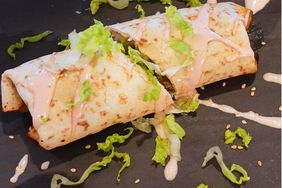

Burrito

A Protein rich Burrito without meat
This dish makes your hunger go away and doesn't
take much of your time to get cooked.
All you need is a couple of ingredients and a frying pan.
Ingredients
- Tortilla
- Beans
- Onions
- Tofu
- Sauce of your choise
- Some Cheese (if you like)
Follow these steps
- Heat the pan and put some oil in it
- Cut the onions and put them into the pan
- Crumble the tofu and give it to the onions
- Let it fry till its getting some rost flavors
- Add those Beans and let them get hot
- Now add the sauce of your choice and stir the whole thing
- Reduce the heat and prepare the tortilla
- Pour the cooked mass into the tortilla and add some cheese if you like
- Roll it in
- Done, bon appetit